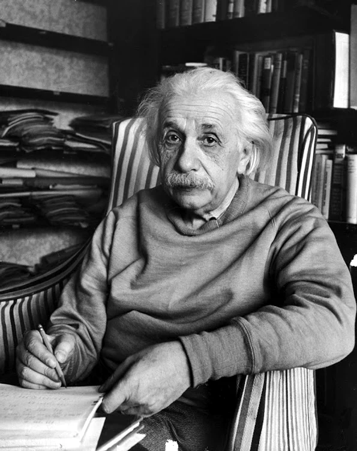

Astronomie
Einstein a comis o greșeală colosală, care îi putea ruina cariera. Expediția britanică pentru verificarea teoriei lui Einstein a fost suprinsă de Primul Război Mondial în Germania, ceea ce a făcut-o să eșueze. Asta i-a acordat timp lui Einstein pentru a-și corecta greșeala.
Teoria relativității generalizate a fost confirmată prin diverse observații astronomice. Cea mai importantă dintre ele a fost studierea eclipsei totale de Soare din 29 mai 1919, la care a participat o echipă condusă de astronomul Sir Arthur Stanley Eddington (care avea să devină unul din susținătorii acestei teorii) și care confirmă devierea unghiulară a razelor de lumină în câmpul gravitațional al Soarelui. Aceasta a confirmat, cu o precizie de 10 % efectul Einstein și, o dată cu aceasta, a dovedit experimental justețea teoriei lui Einstein.
Datele oferite de Eddington i-au asigurat gloria lui Einstein, dar marja de eroare a datelor a fost considerabilă și până-n ziua de azi este greu de obținut date relativ corecte despre stelele abia vizibile la marginea unei eclipse solare prin aparate profesionale. Fenomenele de lentilă gravitațională au fost însă observate cu telescopul spațial James Webb, ceea ce a confirmat teoria lui Einstein.
O altă confirmare o constiuie deplasarea spre roșu (către frecvențe mai joase) a liniilor spectrale emise de atomi într-un câmp gravitațional intens: "efectul Einstein", similar efectului Doppler.
Universul configurat de teoriile lui Einstein nu mai este unul cu o metrică euclidiană. Semnificația devierii razelor de lumină în câmpuri gravitaționale intense constă în acel nou model al Universului înzestrat cu un spațiu cvadridimensional.
Contribuțiile lui Einstein determină transformarea rapidă cosmologiei (mai ales în perioada 1920 - 1970) într-o ramură a fizicii.
Astronomii Alexander Friedmann și Georges Lemaître au demonstrat, prin anii 1920, că ecuațiile lui Einstein conduc la ideea unui Univers aflat în plină expansiune. Încercând să obțină modelul unui Univers staționar, Einstein introdusese, în cadrul celebrelor sale ecuații de câmp, o constantă cosmologică. Ulterior, observațiile lui Edwin Hubble au dovedit contrariul. Einstein recunoaște că a săvârșit o mare eroare și acceptă modelul cosmologic al Universului în expansiune, pe care tot el îl preconizase.
Ulterior, pe la jumătatea secolului al XX-lea, se va admite teoria Big Bang ca explicație a formării Universului.